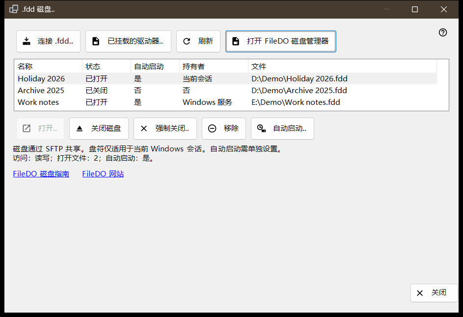
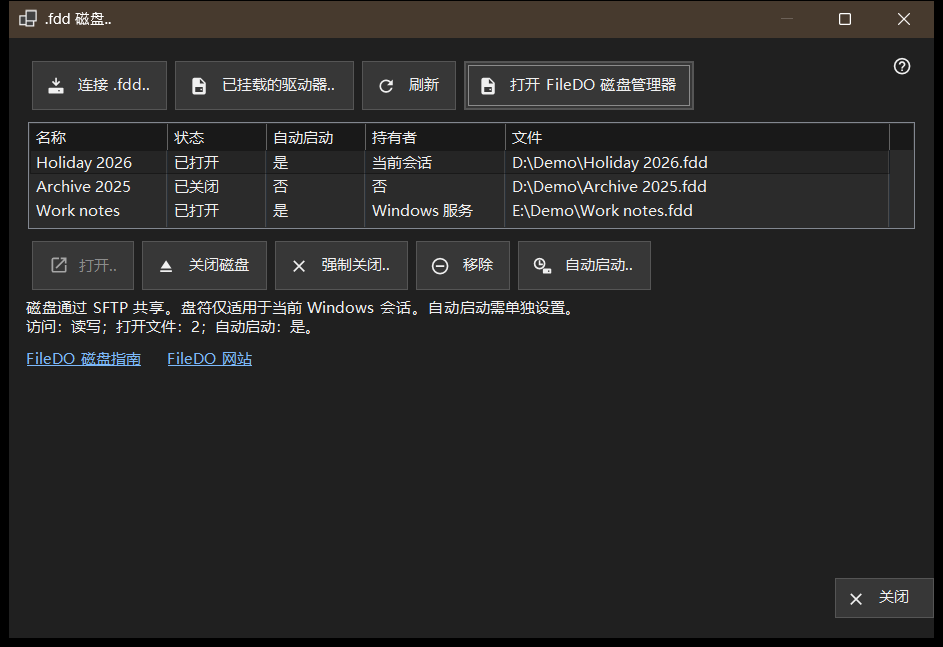

.fdd 磁盘
用途说明
列出此电脑通过 SFTP 共享的 FileDO .fdd 磁盘，并提供日常磁盘命令：连接磁盘、打开或关闭磁盘、停止共享，以及决定磁盘是否随服务器一同打开。它从 Share Manager 主窗口「添加」菜单中的「.fdd 磁盘..」项打开。


操作顺序
- 点击「连接 .fdd..」，选择 .fdd 文件并确认选项对话框。
- 在列表中选中磁盘；列表下方的一行显示其访问模式、已打开的文件和自动启动状态。
- 对已关闭的磁盘使用「打开..」，对已打开的磁盘使用「关闭磁盘」，或用「自动启动..」更改自动打开方式。
- 点击「刷新」重新读取状态；窗口也会每 10 秒重新读取一次。
- 点击「关闭」离开。
界面元素
磁盘列表
每一行是一个共享磁盘：名称、状态（已打开、正在打开、正在关闭、已关闭、已锁定、错误或未知）、自动启动、持有者，以及 .fdd 文件的路径（「文件」列）。持有者说明谁让磁盘保持打开：Windows 服务、当前会话，或在无人持有时显示「否」。将鼠标悬停在某一行上可查看完整路径。第一行会自动选中，列表下方的一行显示其访问方式（「只读」或读写）、已打开文件的数量和自动启动状态。当共享服务无法共享磁盘时，列表和命令按钮会隐藏，该行说明原因；如果磁盘是由 FileDO 自己挂载的，则会出现「打开 FileDO 磁盘管理器」链接。
连接 .fdd..
选择一个 .fdd 文件并将其注册为共享。选项对话框会询问名称、「只读」选项和「注册后打开」（默认勾选）。对于加密磁盘，它还会询问密码，你可以为磁盘指定盘符，或保留「无盘符 - 仅共享」。盘符只在当前 Windows 会话中有效。如果磁盘仍在 FileDO 中打开，请先在那里保存并关闭。如果注册成功但磁盘没有打开，会有消息说明，磁盘以已关闭状态留在列表中。
已挂载的驱动器..
选择此电脑上的一个现成驱动器，例如 FileDO 已经挂载的磁盘。窗口关闭，主窗口为该驱动器继续其通常的添加文件夹步骤。
打开、关闭和移除
「打开..」重新打开已关闭、已锁定或失败的磁盘，并为加密磁盘询问密码。「关闭磁盘」仅对已打开的磁盘可用；客户端会暂时失去访问，已打开的文件最多有 30 秒时间关闭。「强制关闭..」会立即断开已打开的文件，因此未保存的数据可能丢失。「移除」停止共享：磁盘被关闭，其自动启动设置和已保存的密钥被删除，.fdd 文件保留。这些操作都会先要求确认，默认答案为「取消」。
自动启动
「自动启动」列为每个磁盘显示「是」或「否」，无需选中磁盘。短横线（-）表示共享服务不支持自动启动；此时「自动启动..」不可用。「自动启动..」在确认后切换该设置：开启时磁盘随服务器一同打开，加密磁盘的密码保存在此电脑受保护的 Windows 存储中；关闭时删除该已保存的密钥。该设置与状态无关，因此已关闭或失败的磁盘也可以开启自动启动。主窗口列表中的 FileDO 行也会显示它。
指南、网站和关闭
「FileDO 磁盘指南」和「FileDO 网站」会打开 FileDO 的指南和网站，这些磁盘就来自该程序。如果在此电脑上找不到 FileDO 磁盘管理器，窗口会提示从其网站安装 FileDO。「关闭」离开窗口；磁盘操作正在运行时无法关闭窗口。